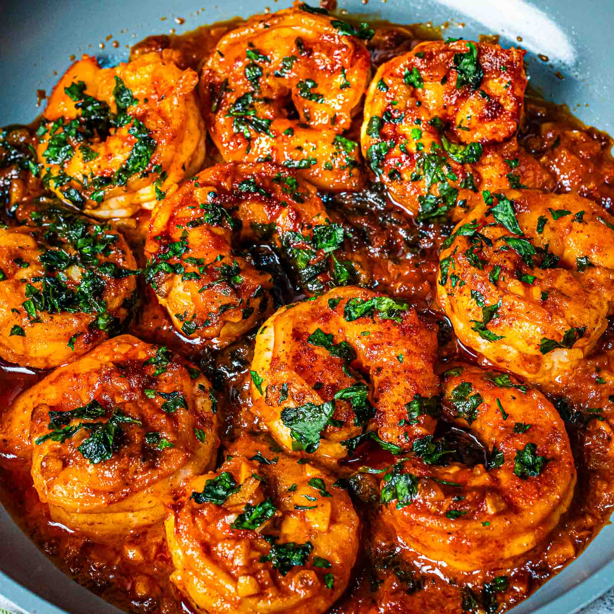

Garlic Butter Shrimp Recipe

Description
Juicy shrimp sautéed in a rich garlic butter sauce with a hint of lemon. This quick and flavorful dish is perfect for weeknight dinners and can be served over rice, pasta, or with crusty bread to soak up the sauce. It’s light, zesty, and absolutely delicious.
Ingredients
- 1 lb large shrimp, peeled and deveined
- 4 tbsp unsalted butter
- 4 cloves garlic, minced
- 1 tbsp olive oil
- 1 tsp paprika (optional)
- 1/2 tsp red pepper flakes (optional)
- Juice of 1 lemon
- 2 tbsp fresh parsley, chopped
- Salt and black pepper, to taste
Instructions
- Pat shrimp dry and season with salt, pepper, and paprika (if using).
- Heat olive oil and 2 tbsp butter in a skillet over medium heat. Add garlic and cook for 1–2 minutes until fragrant.
- Add shrimp in a single layer. Cook for 2–3 minutes per side, until pink and opaque.
- Stir in remaining butter, lemon juice, and red pepper flakes. Toss shrimp until well coated.
- Remove from heat, sprinkle with parsley, and serve immediately with rice, pasta, or bread.
Back